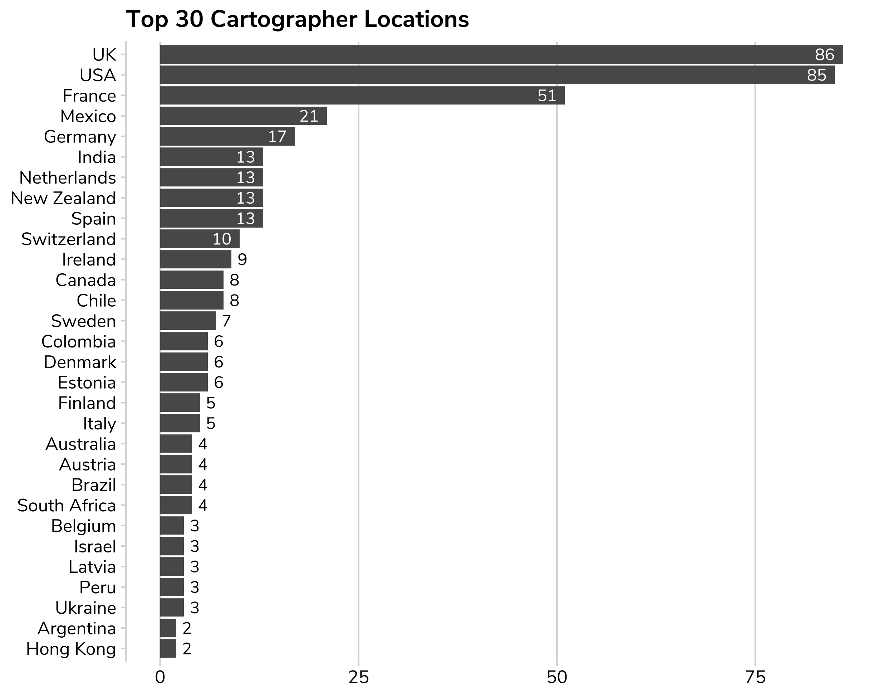
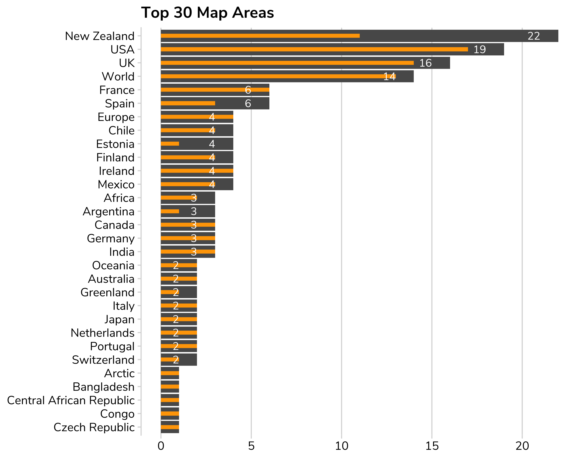
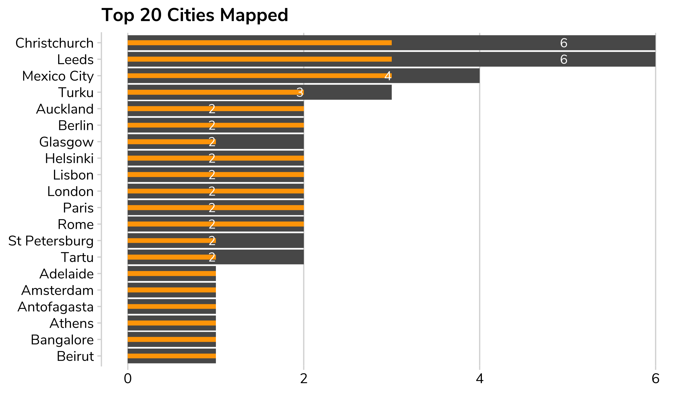
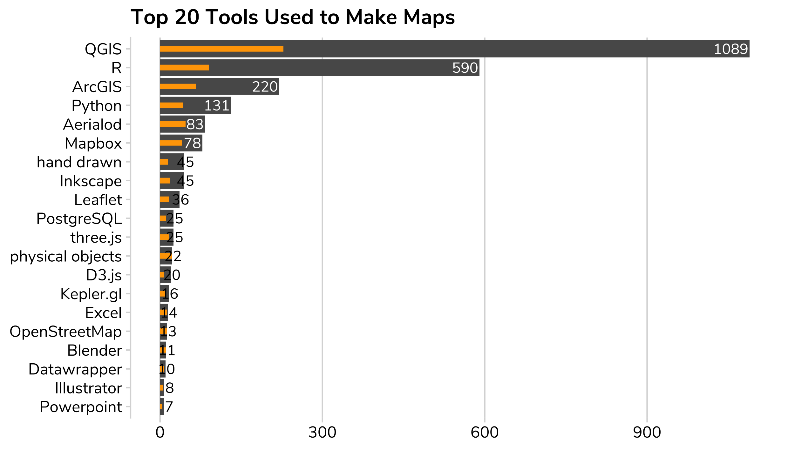
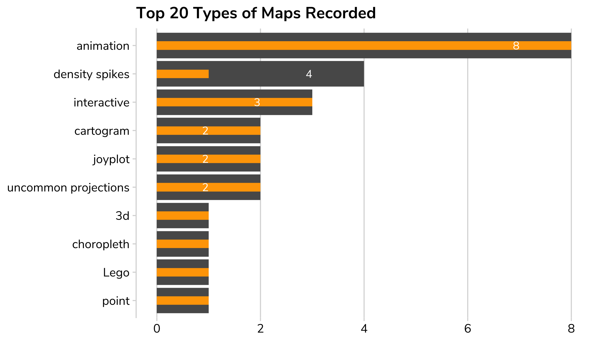
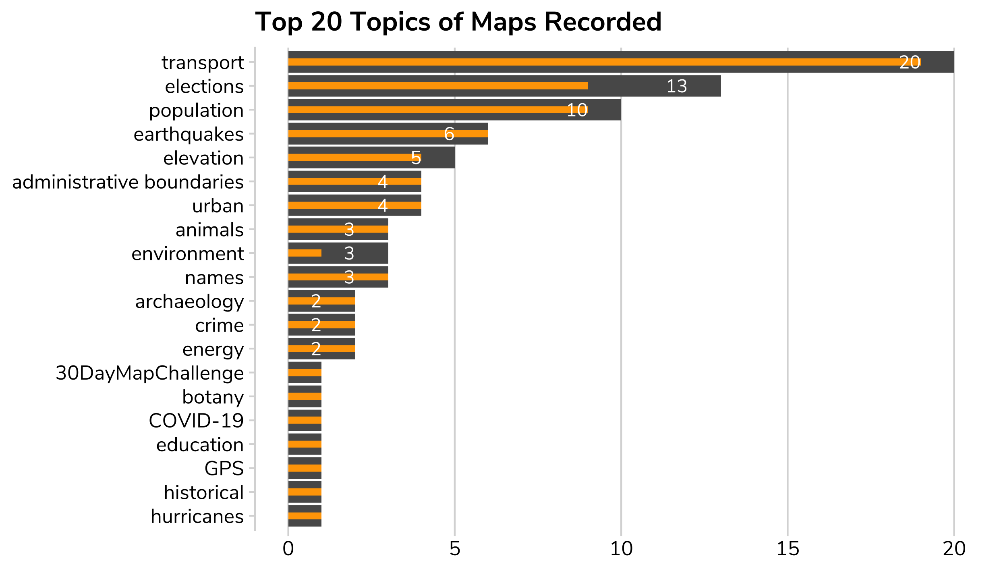

There have been at least 1329 people tweeting on the hashtag. Currently I've indexed 6399 maps by 766 people.
Maps won't appear automatically - there will be a bit of a lag but they'll end up here eventually.
Every map that appears here has been assigned a day/challenge by me but the majority of the other classifications will take months without the wonders of crowdsourcing!
The graphs below should give you an idea of progress...
Just kidding - there were 173 maps for Day 19. 🤡
So far I have recorded 13 people submitting 30 maps, and 33 people submitting 29 maps, leaving them on track for the magic 30 at the end of the month. (Something I can't comprehend myself! 😀)
Currently only 59.5% of cartographers have a country assigned to them.
Currently only 21.3% have an area assigned (ie continent or country) and only 5.9% have a city assigned (though many don't need one).
The main bar is the number of maps with that label. The small orange bar is the number of cartographers who have produced the maps in that area.
 Currently only 27.2% have any tools assigned. I have/will automate harvesting as much information included in tweets as I can, but many tweets don't mention tools. Please add your missing tool info! 🙏
Currently only 2.4% have the type of map assigned. This is a manual and semi-subjective classification, so please feel free to contribute.
Currently only 5.4% have topics assigned. This is a manual and semi-subjective classification, so please feel free to contribute.
